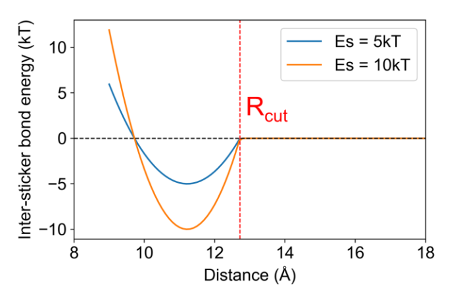
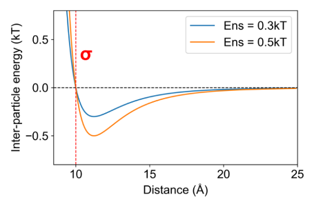

Model Overview
This page describes a typical set of model parameters (force-fields) used in the sticker spacer simulations. The values are mostly obtained from Chattaraj 2024, Chattaraj 2025.
Scope & Rationale
We typically model heterotypic interactions between complementary sticker types (e.g., inspired by SH3–PRM or SUMO–SIM systems), where intersticker crosslinks generate an intra-condensate network.
A two-component (A & B) system serves as a minimal model for multicomponent biological condensates.
Insights are expected to transfer to homotypic (single-component) condensates provided the biopolymer follows a sticker–spacer architecture.
Design choices (at a glance)
Aspect |
Choice / Consequence |
|---|---|
Sticker valency |
\(1\) (saturating); a sticker can participate in only one specific bond at a time. |
Specific vs nonspecific |
Specific = reversible bonds between complementary stickers; nonspecific = Lennard–Jones contacts between any beads. |
Update cadence |
Bond creation/breaking rules evaluated every 20 timesteps to allow local relaxation after formation. |
Energies |
Inputs in kcal/mol; reported in kT with \(1~kT \approx 0.6~\mathrm{kcal\,mol^{-1}}\). |
Polymer Force-Fields
Connectivity and flexibility within each chain are enforced with harmonic bonds and cosine bending terms.
Bonds
with parameters:
Symbol |
Meaning |
Value |
|---|---|---|
\(R\) |
Distance between bonded beads |
— |
\(R_0\) |
Equilibrium bond length |
\(10~Å\) |
\(K_b\) |
Bond spring constant |
\(3~\mathrm{kcal\,mol^{-1}\,Å^{-2}}\) |
Angles
where \(\theta\) is the angle between three successive beads and \(\kappa = 2~\mathrm{kcal\,mol^{-1}}\) controls bending stiffness.
Specific (Sticker–Sticker) Interactions
Complementary stickers interact via reversible, saturating bonds (i.e., valency = 1). Bond formation/breaking depends only on inter-sticker distance under the settings below.
{kind=link}
Switching rule
If two complementary stickers are within \(R_\mathrm{cut}\), they form a bond (probability \(p_\mathrm{on}=1\)).
If a bonded pair reaches \(R \ge R_\mathrm{cut}\), the bond breaks (probability \(p_\mathrm{off}=1\)).
While bonded, the nonspecific LJ between the pair is disabled and replaced by the specific potential. Upon bond break, the LJ potential is reinstated.
Specific potential (shifted harmonic)
Parameters:
Parameter |
Meaning |
Value |
|---|---|---|
\(E_s\) |
Well depth (“specific energy”); sets bond lifetime scale |
user-set; reported in kT |
\(R_0\) |
Resting bond distance |
\(1.122\,\sigma\) |
\(\sigma\) |
Bead diameter (model length unit) |
\(10~Å\) |
\(R_\mathrm{cut}\) |
Specific bond cutoff |
\(R_0 + 1.5~Å\) |
\(p_\mathrm{on},\,p_\mathrm{off}\) |
Attempt probabilities |
\(1,\,1\) |
Kinetics & detailed balance
With \(p_\mathrm{on} = p_\mathrm{off} = 1\), stochasticity stems solely from diffusion and the energy landscape; bond state is determined by \(R\) relative to \(R_\mathrm{cut}\).
The bond lifetime scales as \(\tau_{\text{bond}} \propto e^{E_s/kT}\); dissociation rates show Arrhenius behavior, \(\text{Rate}\propto e^{-E_s/kT}\) (consistent with thermal equilibration inside the well).
Bond creation/breaking rules are evaluated once every 20 timesteps to allow newly formed pairs to relax near \(R_0\).
Nonspecific (All-Bead) Interactions
All bead pairs (stickers and spacers) experience an isotropic Lennard–Jones (LJ) interaction that enforces excluded volume and a moderate attraction.
{kind=link}
with a truncation at \(R_\mathrm{max}\) for efficiency.
Parameter |
Meaning |
Value |
|---|---|---|
\(E_{ns}\) |
LJ well depth (“nonspecific energy”); sets contact dwell time |
user-set; reported in kT |
\(\sigma\) |
Bead diameter |
\(10~Å\) |
\(R_\mathrm{max}\) |
LJ cutoff |
\(2.5\,\sigma\) |
Bonds vs. contacts — terminology
Bonds = specific sticker–sticker links (single valency, governed by \(E_s\)).
Contacts = nonspecific LJ interactions among any beads (governed by \(E_{ns}\)).
Energy Units & Reporting
Simulation inputs use kcal/mol for \(E_s\) and \(E_{ns}\). For analysis and figures, energies are reported in thermal units:
so that \(E/kT\) is dimensionless and temperature-explicit.
Quick Reference Tables
Core parameters
Symbol |
Meaning |
Default / Example |
|---|---|---|
\(\sigma\) |
Bead diameter |
\(10~Å\) |
\(R_0\) (bonded) |
Specific bond rest distance |
\(1.122\,\sigma\) |
\(R_\mathrm{cut}\) (bonded) |
Specific bond cutoff |
\(R_0 + 1.5~Å\) |
\(R_\mathrm{max}\) (LJ) |
LJ cutoff |
\(2.5\,\sigma\) |
\(K_b\) |
Bond spring constant |
\(3~\mathrm{kcal\,mol^{-1}\,Å^{-2}}\) |
\(\kappa\) |
Bending stiffness |
\(2~\mathrm{kcal\,mol^{-1}}\) |
\(p_\mathrm{on},\,p_\mathrm{off}\) |
Specific attempt probabilities |
\(1,\,1\) |
Update cadence |
Bond (create/break) evaluation interval |
every 20 timesteps |
Modeling notes
Association is diffusion-limited; dissociation requires crossing the specific energy barrier set by \(E_s\).
Observed dissociation decays exponentially with increasing \(E_s\) (Arrhenius-like), indicating thermalization within the specific well and consistency with detailed balance.